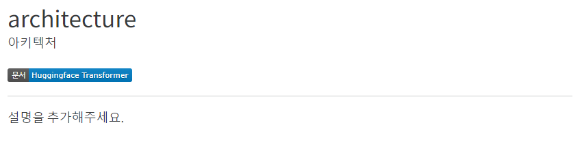

용어 사전 살펴보기
용어 사전에 등록된 용어 설명 페이지의 구조를 알아봅니다. 이 문서를 통해서 기존에 등록되 용어 수정하거나 새로운 용어를 등록하는 방법을 이해할 수 있습니다.
아래의 archirecture로 등록된 용어 페이지를 선택하여 상세 페이지로 이동하여 용어 사전 페이지의 구조를 이해합니다.

이 페이지는 archirecture.qmd파일의 정보로 생성되며 아래의 코드를 이용하여 영어와 한국어 용어 이름이 표시됩니다.
---
title: 'architecture'
description: '아키텍처'
url: https://huggingface.co/docs/transformers/index
---title과 description은 각각 용어의 영어와 한국어 표현을 나타내고 url은 용어가 나온 원본 문서의 위치를 의미합니다.
동일한 용어가 사용되는 딥러닝 분야에 따라 다른 뜻으로 사용될 수 있으니 원본 문서에 대한 링크를 추가하고 있습니다.
상세 페이지에서는 image shields io 마크다운 배지를 이용하여 원본 문서로 이동이 가능한 링크를 생성합니다. 아래의 코드는 마크다운 배지를 생성하는 코드입니다.
<a href="https://huggingface.co/docs/transformers/index" target="_blank">
<img loading="lazy"
alt="src: HuggingFace Transformer"
src="https://img.shields.io/badge/문서-Huggingface_Transformer-blue" >
</a>마크다운 배지에 표시되는 문구는 img shields io에 전달하는 URL을 통해서 작성됩니다. 위의 코드에서는 문서-Huggingface_Transformer-blue를 사용했습니다.
-를 통해서 문서, Huggingface_Transformer, blue의 3개의 배지 정보가 전달되었습니다. 최종 결과물과 비교하면 각각의 의미를 이해할 수 있습니다. 공백을 _로 표시했음을 기억하세요.